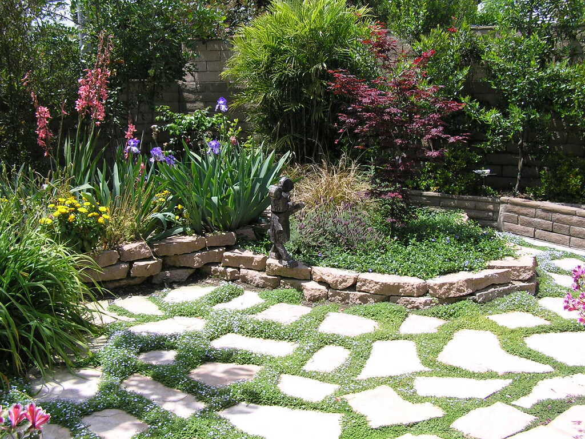

Year-Round Garden Maintenance Tips
Empowering you to keep your landscape thriving through every season.
Seasonal Tasks
Maintaining your garden is easier when you break it down by season. Here’s a guide to what you should focus on throughout the year.
Spring
- Inspect irrigation systems for damage or clogs.
- Apply mulch to retain moisture and suppress weeds.
- Plant annuals and vegetables.
- Prune flowering shrubs after they bloom.
Summer
- Water deeply and early in the morning to reduce evaporation.
- Keep an eye out for pests and diseases.
- Deadhead flowers to encourage more blooms.
- Provide shade for sensitive plants.
Autumn
- Plant bulbs for spring blooms.
- Remove fallen leaves to prevent mold.
- Add compost to garden beds.
- Divide and replant perennials.
Winter
- Prune dormant trees and shrubs.
- Protect plants with burlap or frost cloth.
- Sharpen and clean garden tools.
- Plan next year’s garden layout.
Pro Tips for Garden Success
Maximize the health and beauty of your garden with these expert strategies:
Soil Health
Regularly test your soil and amend it with compost to keep it nutrient-rich.
Mulching
Use organic mulch to retain moisture, regulate soil temperature, and improve soil quality over time.
Native Plants
Choose plants that are adapted to your local climate for lower maintenance and water use.
Pruning
Prune regularly to encourage healthy growth and remove dead or diseased branches.
Water Wisely
Install drip irrigation systems for targeted watering and reduced waste.
Create Your Dream Garden
Interested in a custom garden design? Lytle Landscape provides expert consultations to get you started.
Schedule a Consultation